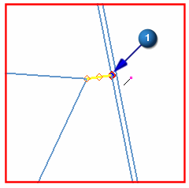
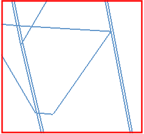

Collapse the edge between the rib and the side
Collapse Edge (Polygon Geometry group)
-

 Move the cursor so the edge is highlighted, and click the end point.
Move the cursor so the edge is highlighted, and click the end point.

The corner of the rib moves to the edge.
-
OK
